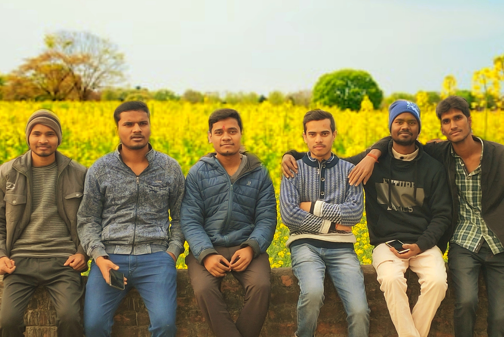

Today I came back college after 51 days long vacation for 5th semester registration. Here I met my friends and we share the stories from my vacations. I had enjoyed the vacation very much, some good things happens and also some bad. I also had travelled some places in this vacation. In this semester our subjects are- ‘Managerial Economics, Sociology, Integrated Circuits, Antenna & Wave Propagation, Principles of Communication & Digital Signal Processing’. During vacation our last semester, I got 74%. And also our challenge evolution of ‘Universal Human Values and Professional Ethics’ result came but it my copy had not rechecked and at least one number had not increased. My ₹5,000 also had gone waste. Now I will have to give 7 exams in this semester including a backlog paper. I have never thought in my life that I will fail in any exam in my college, but it’s going true. From tomorrow, our classes will be going to start.
08 Aug 2019, Thursday
Today our teacher Rajeev Sir had become angry on us. It happened that there was AMCAT exam at our college. The AMCAT is a computer adaptive test which measures job applicants on critical areas like communication skills, logical reasoning, quantitative skills and job specific domain skills thus helping recruiters identify the suitability of a candidate. It was mainly for final year students but third year students could also participate in it. The one half of electronics branch students had gone to take the exam and other few were in the class. And at that time there was lecture of his (Rajeev Sir). When he came to class, he did not found all of us so got very angry and when we came back in the class after exam, he vented all of his anger on us. He also postponed the future classes for indefinite time. We all went to him after classes over, we apologise for that and then he told us, it will be sorted out in the class. Our CR also had not told him about the exam before and there was also no any early official notice about the exam.
18 Aug 2019, Sunday
Today, I was coming from home after celebrating Raksha Bandhan and my sister’s birthday, which was on 15th. I was in the train my mother phone called me to ask where I have reached. The train was about to reach Lucknow. I was sleeping before phone call and after talking, I went washroom to wash my face and was standing near gate. An old man was also standing at the gate, he wanted to get down at Lucknow City station but there is not train’s stoppage there. He felt dizzy and was about to fall outside the train. I saw him and do quickly to pull him inside. He told that he felt dizziness due to seeing the fast moving stones of the track. Later he told thank you to save his life and gave many blessings and asked about me and my family. I was feeling very proud by saving someone’s life.
28 Aug 2019, Wednesday
Last few days were very special days for me. In these days I saw a web series named 13 Reasons Why. It is a teen drama web television series based on the novel of same name by Jay Asher. In this web show, a young girl named Hannah Baker, committed suicide due to bullying in school, deception, sexual harassment and depression. She had made cassettes of voice notes of those 13 reasons why did she do that. There are 3 seasons of this show and third season is released few days before.
I had heard a lot about acting, dialogues, content, its IMDb rating and many more characteristics of the series. I had viewed some of the clips and songs on YouTube but never got the chance to watch the web series. One of my friends named Kamendra Kumar had downloaded it so I took videos from him to watch. It is an outstanding and fantastic web series.
I liked most the acting and dialogue delivery of Hannah Baker (Katherine Langford) and Clay Jensen (Dylan Minette). The two songs from the show named ‚ÄòThe night we met‚Äô & ‚ÄòLovely‚Äô are my favouriteüòç. There are also some similarities in me and the character Clay Jensen. Clay is socially awkward and usually doesn‚Äôt talk much, Kind, Noble and a boy with secrets like me. ‚ÄúI want to be Clay Jensen in this world full of Bryce Walker‚Äù. Bryce Walker was the main villain of the web series. I watched the first season in just one night. I didn‚Äôt sleep that night, I was thinking about the Hannah Baker & Clay Jensen in the class next day and even after coming back home. I was thinking why Hannah had done suicide üò¢. Suicide is not an option of anything, even in worse conditions there are some people who love you, we should think about them in bad times. After seeing this web series, I have made a list of ‚Äú100 Reasons Why to Stay Alive‚Äù.
13 Sept 2019, Friday
It is my birthday today üéÇ. I got best wishes from family members, brother, relatives and many friends. At previous midnight, my roommate and my friends Satyam, Shiv Shakti, Sujeet and others brought cake and I cut and celebrated my birthday with small party. My some close friends (Shiv Kumar, Prince & Abhishek Patel) were not present there because of their personal reasons. My friends added their WhatsApp status with my photos, some wishes and some funny names. Aditya wrote my name as Wolverine, Satya Prakash wrote Gore, Prateek wrote Shiva: The Superhero, Satyam wrote Lil Master, Shiv Shakti wrote Dean Ambrose, Shiv Kumar wrote Thor and many more many names. These are the names I have earned during my college journey till now. I enjoyed the whole day very much.üòç
16-20 Sept 2019
There is a one week faculty development programme for our branch teachers, which is held by our HOD sir. The program is on the topic ‘VLSI for signal processing & Communication’. This time also our HOD decided to give permission to participate some selected students. Our teacher Archana Ma’am selected 13 students from our branch including me. I don’t know on what basis she did it. She didn’t select my friend Prince Kr Gupta. He was very upset and he contacted her but she refused to take him in.
We are permitted to join only first three days of workshop. In which we will study about VLSI and some basics of Internet of Things. On the first day, our HOD sir’s master Dr. Krishna Raj sir had come. Krishna sir is current HOD of Electronics department in HBTU. He told us some stories of our HOD sir and give lecture on the following topic. We have to go college before the regular college time and leave college late in the evening. There is also arrangement for refreshments and lunch. The gentle men who came here to teach us provide us the Vivado Xilinx software and teach us how to use it. They also teach us the use of raspberry pi.
29 Sept 2019, Sunday
Today is the first day of Navratri Pooja. I used to have fast on the holy days of Hindu culture. Today is also my fast. Today is Holiday also so we all Jai Bhavani members made a plan to go Annapurna Temple. We went there do worship. Prateek was also with us, he had to go to his sister‚Äôs home. After worship we spent some time there and then we went to Prince‚Äôs room and Prateek went to Kanpur. All of my friends had not fast so Prince had made fritters and tea. They were all teasing and showing me and eating those fritters üò°. Today was drizzling also so we were standing at roof and enjoying fine weather.
18 Oct 2019, Friday
Today was a normal day in college till lunch break. Our fifth lecture was vacant, there was no class. All of the Jai Bhavani members were united at Shiv Kumar’s room for lunch. We decided to take a group picture of the boys. We choose the front gate place for photoshoot; we sat there in stepwise group. Aditya Verma is our photographer. He took our pictures.
We also decided there to do a chicken party at Jai Bhavani Headquarter tonight because we had not eaten non-Veg since the Navratra. Abhishek Patel’s room is ‘The headquarter of our gang’. We do party and group discussions here. Every of our group members have some Excellency in some special areas. Like Abhishek Patel is very good in cooking, Aditya is brilliant in photography and videography, Kamendra is best in making decisions, Shiv Kumar & Abhishek Sharma are good in study and I am somewhat good in Technology. So Aditya made a list of the friends and their interest fields. He gave some of them some funny complements. In that list "Kamendra was Management In-charge, Abhishek was Mess In-charge, Aditya was Media in-charge, Abhishek Singh was Sports In-charge Shubham & Sagar were Labours, Shiv Kumar was Safai-Karmi, Umar was Academics In-charge and I was Technical & Information In-charge".
21 Oct 2019, Monday
Last night was Dark Night for me. During last chicken party at Abhishek’s room, I accidentally confessed that Shivangi was my first year crush. It was a suicidal step for me. Everyone of the group started teasing and making un-imaginary things at last night’s conversation in Jai Bhavani WhatsApp group. I closed my Internet data, left the conversation but later they did phone call to me to join them. They all had gone crazy and told Aditya Verma to add her. Aditya had taken them seriously and he added Shivangi Dubey in the WhatsApp group. All of them started saying that Shivam tell her your feelings, tell her the truth, blah blah blah. I was silently reading those messages. After some time he removed her. I was afraid that she would be angry but she was normal in the class today, she didn’t mention a word about the last night tragedy. I felt very relieved.
09 Nov 2019, Saturday
I had come recently from home after celebrating Diwali & Chhath Pooja. Today is Saturday and it was our holiday. Our second class test and Semester exams are near, Prince Kr Gupta suggested us a plan for group discussion and revision of every subject at Jai Bhavani headquarter. He told us that he will allot one unit of different subjects to everyone. And which would be discussed every weekend night among everyone. He gave me the first unit of Digital Signal Processing. I have to explain them the direct form (DF1 & DF2) realization, Cascade realisation, Parallel realisation and Ladder structure realisation of IIR filters. Our DSP teacher Gaurish Sir teaches us the subject very well. I have to just revise his notes and I will be ready for presentation or discussion. From 5:00 PM today, there is our first discussion and I hope I will explain my topics to them very well.
21 Nov 2019, Thursday
Today was fresher party day, unlike last year this year the fresher party was organised for only one day and during daytime. It was due to last year’s accident and death of our friends. There was no technical fest, no sports and was only cultural programme. This time our juniors were organising the fresher’s party. We (The Seniors) were invited in the party. The programme was scheduled from 12:00 pm to early in the evening. I had gone to college with some of my friends. Some of the juniors performed very well and some were very fantastic. I enjoyed much.
12 Dec 2019, Thursday
Our 5th end semester exams had started on 10 December. On the first day there was examination of ‘Antenna & Wave Propagations’. Today is 12 December and there were two exams today. One was examination of backlog subject ‘Universal Human Values & Professional Ethics’ and another one of ‘Sociology’. I was very nervous because both are fully theoretical subjects and I am weak in making stories and also my handwriting is very bad. There was only one hour gap between both exams. Means I had only about 45 minutes to revise Sociology. Some of my friends were also with me who have backlog in same subject. After first exam I went to Shiv Kumar’s room, he made me understand the whole syllabus in a very short time. Because of him my exam has gone well. Our next exam is on 14th and it is of ‘Integrated Circuits’ which is not too hard for me.
18 Dec 2019, Wednesday
Our exams are going very good. Today I was preparing for my tomorrow’s examination i.e. ‘Principals of Communication’. I had revised almost all the syllabus. When I was going to sleep, I got an email from AKTU at 11:16 pm. It was written in this email that “your next/ tomorrow’s exam has been postponed due to inevitable reason for the further notice”. When all the students got the information then they became happy and started messaging in the college WhatsApp group. Our exam has been cancelled because of the violent protests who are protesting against the CAA [Citizenship (Amendment) Act, 2019] & NRC [National Register of Citizens bill] bills implemented by Indian government. The protests are being very violent in some cities of Uttar Pradesh so UP government closed the Internet facility in those cities, that’s why our exam is postponed. I am not happy from that, I wanted our exams to end soon so that I can go home.
20 Dec 2019, Friday
The protests against CAA & NRC are increasing and it is also reached at Kannauj. So today, the internet service in Kannauj is also closed for indefinite time. Now we are unable to use WhatsApp, YouTube and other Internet services. I am being bored so started reading the lessons for the upcoming examinations. I don’t think our next exam will be on time. It will also be postponed.
In the evening, we get message from AKTU that our all next exams also has been postponed. We had to wait for the further notices but our practical exams have not cancelled. Practical exams are scheduled from 30th December.
24 Dec 2019, Tuesday
Our all theories exams have been cancelled. I have no more work to do so I decided to go home for some days. Prateek has also gone to his sister’s home. I already called my dad for ticket booking. My ticket is for today in the Utsarg Express.
Due to huge requests of my friends and my brother, I made my appearance on the Instagramüì∏. Prateek was requesting to me since a year to make account on Instagram, I was refusing him continuously. But finally, today I made it possible and also posted my first photo on Instagram.
01 Jan 2020, Wednesday

I had to come back Tirwa from home on 30th December. It is because our practical exam is scheduled from today but there is no any information from the college about when will it happen. When I reached here means Tirwa, I asked Gaurish Sir regarding to the exams. He told me that our practical exams will be from 10th January.
I was alone at my room last night, Shiv Kumar called me to Abhishek Patel‚Äôs room to celebrate New Year party. We all Jai Bhavani members decided to cut cake at midnight. Aditya Verma ordered the cake. Few minutes before 12:00 am, we started counting down. At exactly 12 am, Aditya cut the cake and we distributed it between us. After that Shiv Kumar, Sagar Maurya, Rohit Maurya & Kamendra Kumar started dancing and did some funny steps. In the morning we walked across whole Tirwaganj by foot and also went to Annapurna temple. There was small mustard field near temple, we sat there and took photos. When I came back to my room, I edited it to look like DDLJ movie üìΩ.
Our postponed exams are scheduled to start from 5th January. The exams of 19th, 21st and 24th December are going to be conducted on 5th, 7th and 9th January respectively. We have to download our new admit card for these exams and also have to revise the remaining lessons.
09 Jan 2020, Thursday
It was our last exam today. It was also very delicious day. Two of my friends had birthdays in previous days. They gave us party today. There was happiness because our exams have ended and happiness became double with these two parties. One is Prince Kr Gupta, who gave us Pizza party in the evening after coming from college. And other is Arshad Hussain, who gave us Paneer party at dinner in a hotel near medical college at Tirwa. Prince gave us party at our Jai Bhavani headquarter. We were fourteen persons and we had ordered fifteen Pizzas from Aryan 99 Pizza store. Aditya clicked my photo with pizza and named me as Pizza Boy ü§®, he does such type of things every time.
11 Jan 2020, Saturday
Two of our practical exams finished yesterday and the other two exams were today. I did my biggest mistake in college today due to which my best friend Shiv Kumar had to drop off from class. Our viva voce of IC lab was going on and examiner told me to draw the ‘Mono-Stable Multi-vibrator’. I drew it and beckon to Shiv Kumar that it is right or wrong. He spoke slightly loud and examiner heard him. Examiner scolded him and told to go out of class. I was very scared and feeling sad for him. It was my fault because I asked to him but he was sent out of class. But at the end when everyone’s viva went over, examiner took his viva and did not become angry at him.
Tomorrow is my ticket reservation in Utsarg Express train to go home. We were going home for only a week because our exam had ended lately.
 It is my birthday today üéÇ. I got best wishes from family members, brother, relatives and many friends. At previous midnight, my roommate and my friends Satyam, Shiv Shakti, Sujeet and others brought cake and I cut and celebrated my birthday with small party. My some close friends (Shiv Kumar, Prince & Abhishek Patel) were not present there because of their personal reasons. My friends added their WhatsApp status with my photos, some wishes and some funny names. Aditya wrote my name as Wolverine, Satya Prakash wrote Gore, Prateek wrote Shiva: The Superhero, Satyam wrote Lil Master, Shiv Shakti wrote Dean Ambrose, Shiv Kumar wrote Thor and many more many names. These are the names I have earned during my college journey till now. I enjoyed the whole day very much.üòç
It is my birthday today üéÇ. I got best wishes from family members, brother, relatives and many friends. At previous midnight, my roommate and my friends Satyam, Shiv Shakti, Sujeet and others brought cake and I cut and celebrated my birthday with small party. My some close friends (Shiv Kumar, Prince & Abhishek Patel) were not present there because of their personal reasons. My friends added their WhatsApp status with my photos, some wishes and some funny names. Aditya wrote my name as Wolverine, Satya Prakash wrote Gore, Prateek wrote Shiva: The Superhero, Satyam wrote Lil Master, Shiv Shakti wrote Dean Ambrose, Shiv Kumar wrote Thor and many more many names. These are the names I have earned during my college journey till now. I enjoyed the whole day very much.üòç
 Today was fresher party day, unlike last year this year the fresher party was organised for only one day and during daytime. It was due to last year’s accident and death of our friends. There was no technical fest, no sports and was only cultural programme. This time our juniors were organising the fresher’s party. We (The Seniors) were invited in the party. The programme was scheduled from 12:00 pm to early in the evening. I had gone to college with some of my friends. Some of the juniors performed very well and some were very fantastic. I enjoyed much.
Today was fresher party day, unlike last year this year the fresher party was organised for only one day and during daytime. It was due to last year’s accident and death of our friends. There was no technical fest, no sports and was only cultural programme. This time our juniors were organising the fresher’s party. We (The Seniors) were invited in the party. The programme was scheduled from 12:00 pm to early in the evening. I had gone to college with some of my friends. Some of the juniors performed very well and some were very fantastic. I enjoyed much.